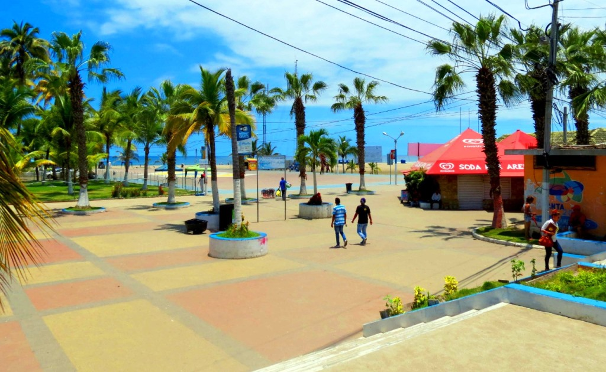
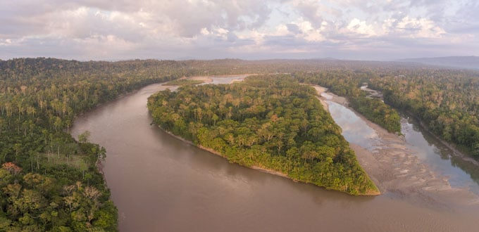

1.-Playas: Manta es conocida por sus hermosas playas como Playa El Murcielago, Playa San Lorenzo, y Playa Santa Marianita, ideales para practicar deportes acuaticos como surf y kitesurf.
2.-Malecon Escenico: El Malecon de Manta es un paseo maritimo popular que ofrece vistas panoramicas del oceano Pacifico, areas verdes, juegos infantiles y una variedad de restaurantes y bares.
3.-Museo del Banco Central: Exhibe artefactos arqueologicos y culturales de la region.
4.-Mercado Central: Ideal para probar comida local y comprar artesanias ecuatorianas.
5.-Isla Corazon: Un santuario de aves y un lugar excelente para practicar kayak y observacion de aves.
| Manta |
| galeria |
| estadistica grafica |
| costumbres |